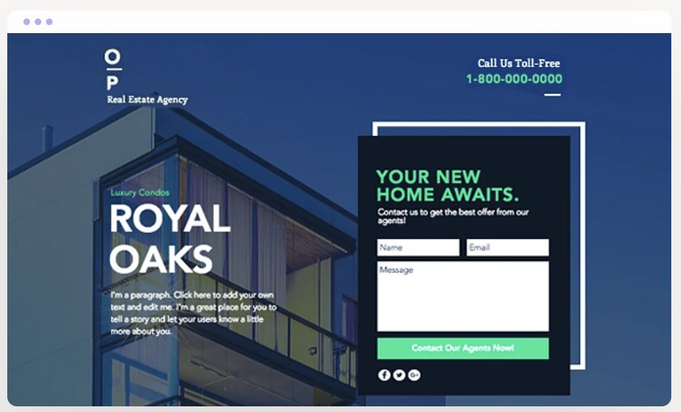
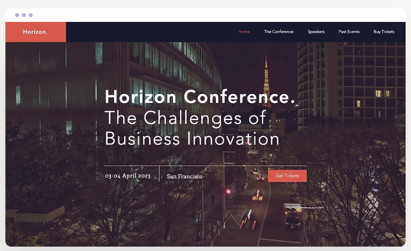
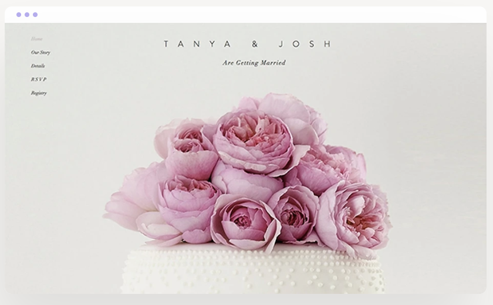
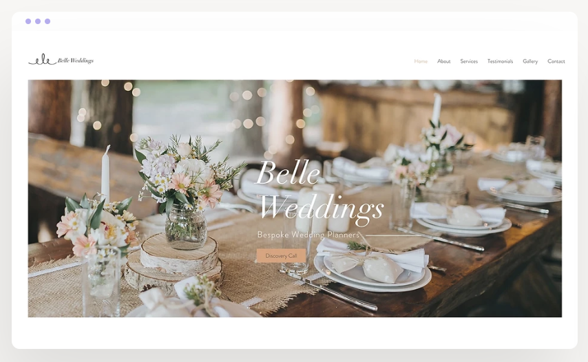
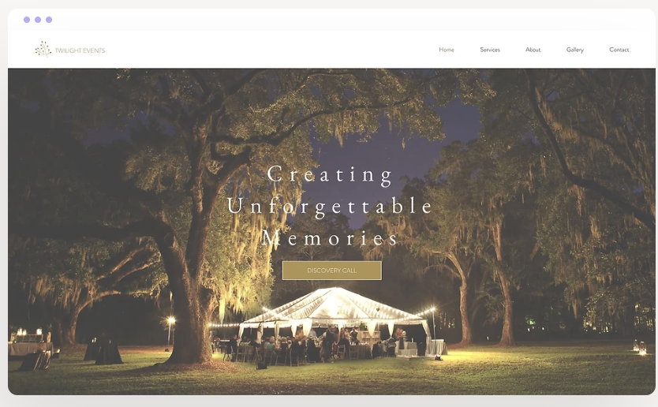
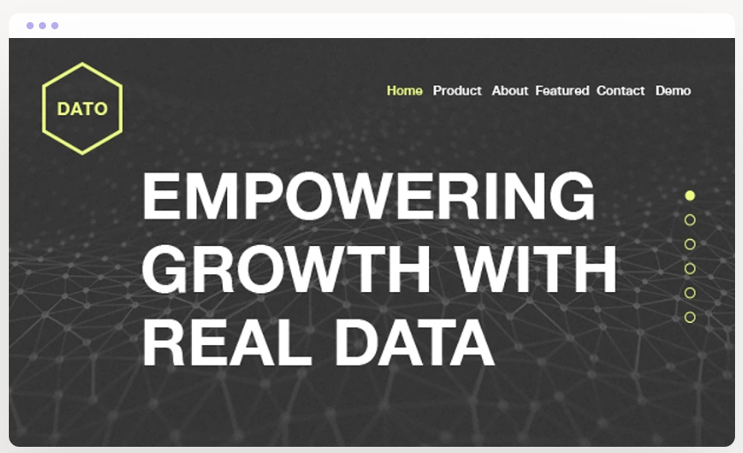
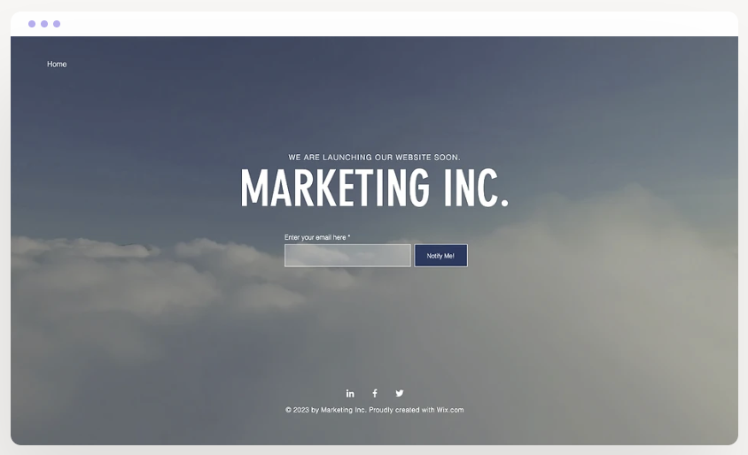
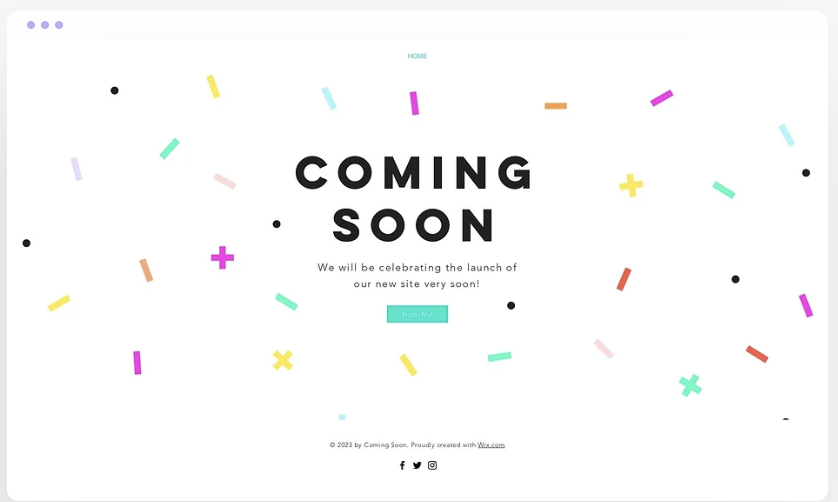
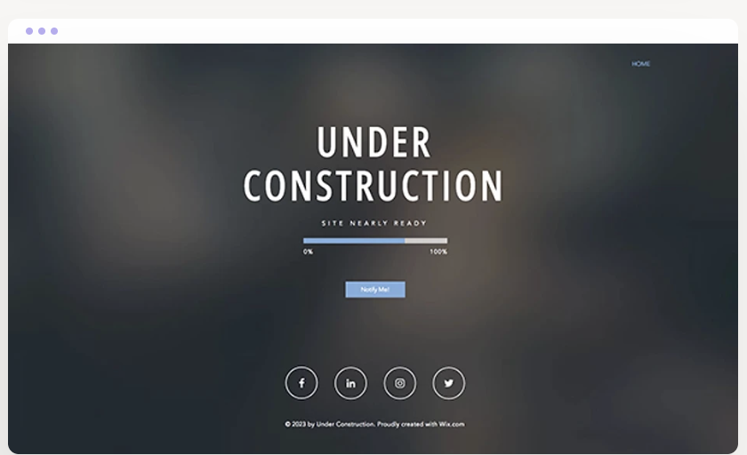

Wix.com / 2013–18
Oversaw the creation of Wix's entire business template library — the highest performing category on the platform, responsible for 30% of total template revenue. I directed a team of graphic designers across the full production process, from research and mood boarding through to launch, ensuring every template was not just visually strong but genuinely intuitive to use as a real business website.








